library(MASS)
# help(Boston)
data(Boston)k-NN regression
Introduction to statistical Learning
Introduction
The \(k\) nearest-neighbor estimator of \(m(t)=E(Y|X=t)\) is defined as \[ \hat{m}(t) = \frac{1}{k} \sum_{i\in N_k(t)} y_i, \] where \(N_k(t)\) is the neighborhood of \(t\) defined by the \(k\) closest points \(x_i\) in the training sample.
Data for prediction
The Boston housing data, included in the MASS package, contains information on housing in the Boston suburbs area.
Main predicion goal
Our goal is to predict the housing mean value, stored in the mdev variable, using as predictor variable the percentage of population with lower socio-economic status. lstat.
Data description
We start by plotting the values to show the relation among them.
x <- Boston$lstat
y <- Boston$medv
plot(x,y, xlab="x: lstat", ylab="y: medv")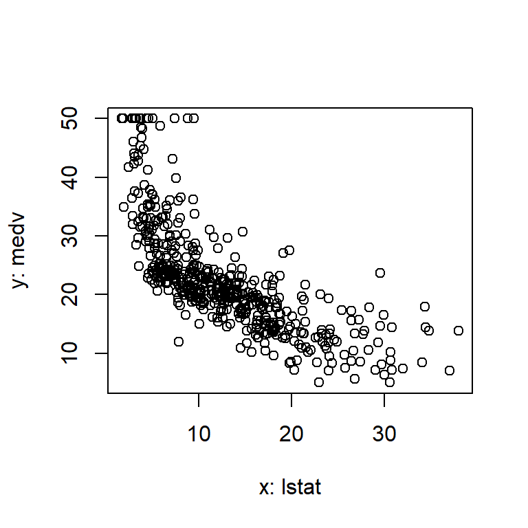
We migt consider fitting a polynomial curve but we start with KNN
Building a model with KNN
We write a function for computing the \(k\)-nn estimator of \(m(t)\) for a given value of \(t_j\in \{t_1,\ldots,t_J\}\).
knn_regr<- function(x, y, t=NULL, k=3, dist.method = "euclidean"){
nx <- length(y)
if (is.null(t)){
t<- as.matrix(x)
} else {
t<-as.matrix(t)
}
nt <- dim(t)[1]
Dtx <- as.matrix( dist(rbind(t,as.matrix(x)),
method = dist.method) )
Dtx <- Dtx[1:nt,nt+(1:nx)]
mt <- numeric(nt)
for (j in 1:nt){
d_t_x <- Dtx[j,]
d_t_x_k <- sort(d_t_x,partial=k)[k]
N_t_k <- unname( which(d_t_x <= d_t_x_k) )
mt[j]=mean(y[N_t_k])
}
return(mt)
} Now this function is used to build a knn regression model.
Define \(t\) as a sequence from 1 to 40 t <- 1:40.
t <- 1:40Estimate \(m(\)t[j]\()\) for \(j=1,\ldots,40\) using \(k=50\).
k <- 50
mt <- knn_regr(x, y, t=t, k=k, dist.method = "euclidean")Plot y against x. Then represent the estimated regression function.
plot(x,y,col=8, xlab="x: lstat", ylab="y: medv")
lines(t,mt,col=2,lwd=4)
title(main=paste0("k-nn with k=",k))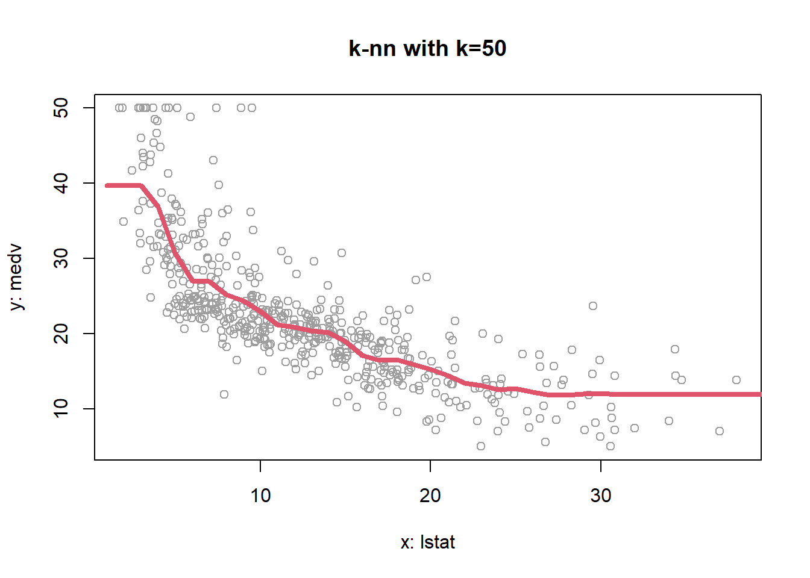
Tuning the model
Repeat the same process using different values of \(k\).
k_values <- c(100, 50, 15, 5)
for (k in k_values) {
mt <- knn_regr(x, y, t=t, k=k, dist.method = "euclidean")
plot(x, y, col=8, xlab="x: lstat", ylab="y: medv",
main=paste0("k-NN con k=", k))
lines(t, mt, col=2, lwd=4)
}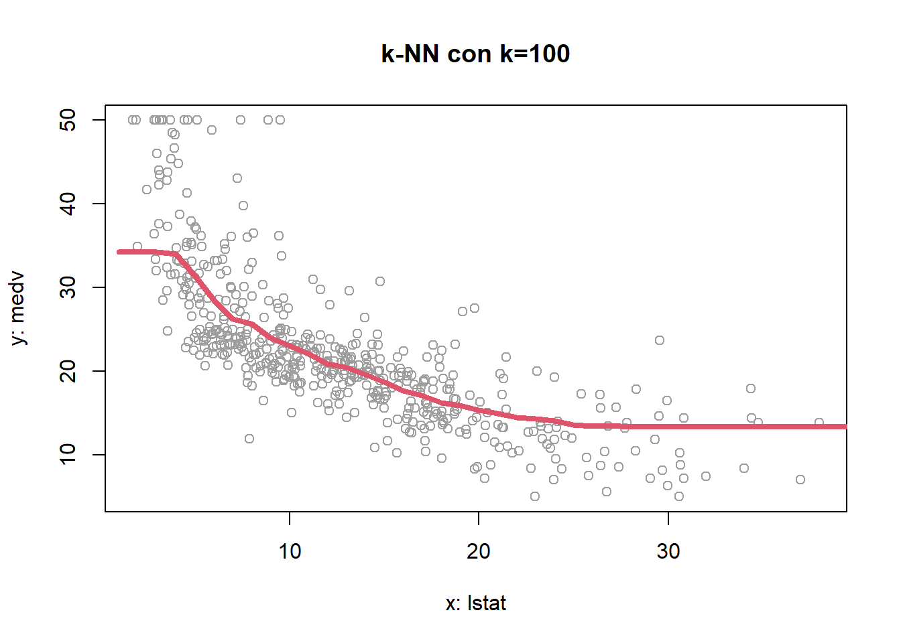
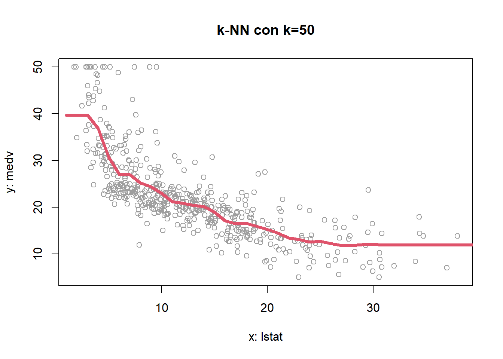
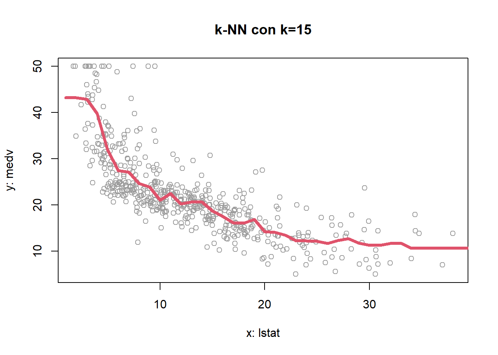
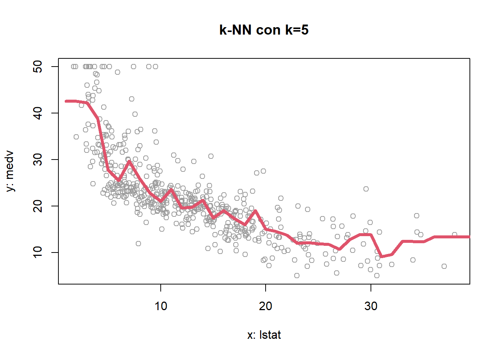
Model performance
A simple, though not good, idea is to compute the resubstitution (or training) error associated with each model.
When evaluating the performance of a statistical learning model, it is important to distinguish between training error (also called resubstitution error) and test error. In this document, we explain why training error can be misleading and how to properly assess model performance.
What is Training Error?
Training error is calculated by evaluating the model’s predictions on the same dataset that was used to fit the model. Mathematically, it is computed as:
\[ \text{Training Error} = \frac{1}{n} \sum_{i=1}^{n} (y_i - \hat{m}(x_i))^2 \]
where: - ( y_i ) are the observed values, - ( (x_i) ) are the predicted values from the model, - ( n ) is the total number of observations.
Why is Training Error Misleading?
Since the model is evaluated on the same data it was trained on, the training error is overly optimistic and does not provide a reliable measure of how well the model generalizes to new data. This issue is particularly problematic when dealing with flexible models such as k-nearest neighbors (k-NN).
Example: k-NN and Overfitting
In k-NN regression, the choice of ( k ) significantly affects the training error: - When ( k ) is very small, the model closely follows the training data, leading to low training error but high test error (overfitting). - When ( k ) is too large, the model smooths out the predictions too much, leading to higher training and test error (underfitting).
k_values <- c(200, 100, 50, 15, 5, 3)
errors <- data.frame(k = integer(), RMSE = numeric())
for (k in k_values) {
mt <- knn_regr(x, y, t=t, k=k, dist.method = "euclidean")
RMSE <- sqrt(mean((y - mt)^2))
errors <- rbind(errors, data.frame(k = k, RMSE = RMSE))
plot(x, y, col=8, xlab="x: lstat", ylab="y: medv",
main=paste0("k-NN con k=", k, " (RMSE: ", round(RMSE, 2), ")"))
lines(t, mt, col=2, lwd=4)
}Warning in y - mt: longitud de objeto mayor no es múltiplo de la longitud de
uno menor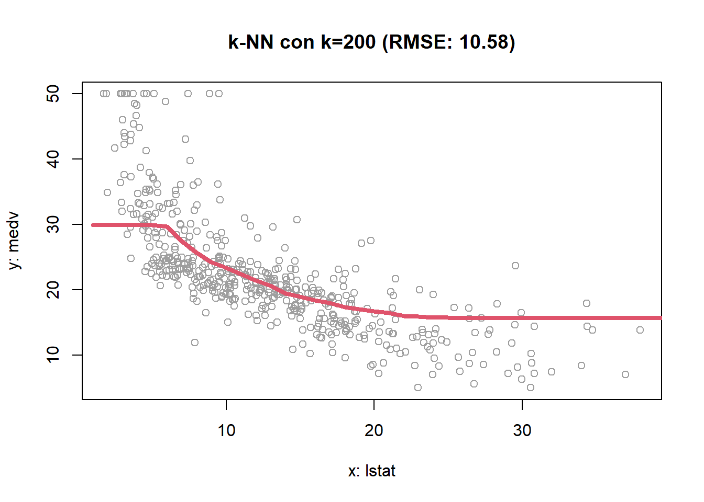
Warning in y - mt: longitud de objeto mayor no es múltiplo de la longitud de
uno menor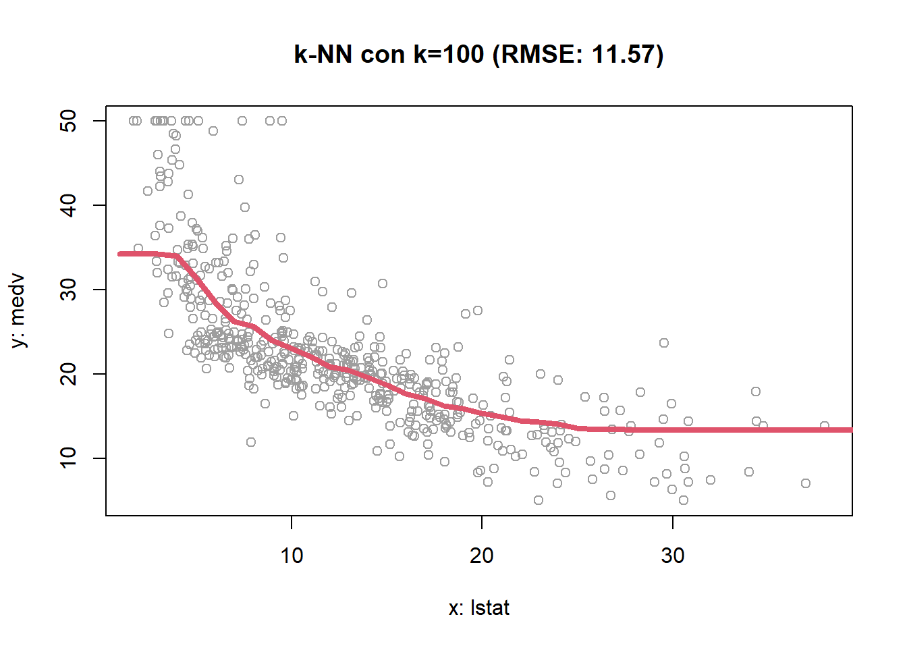
Warning in y - mt: longitud de objeto mayor no es múltiplo de la longitud de
uno menor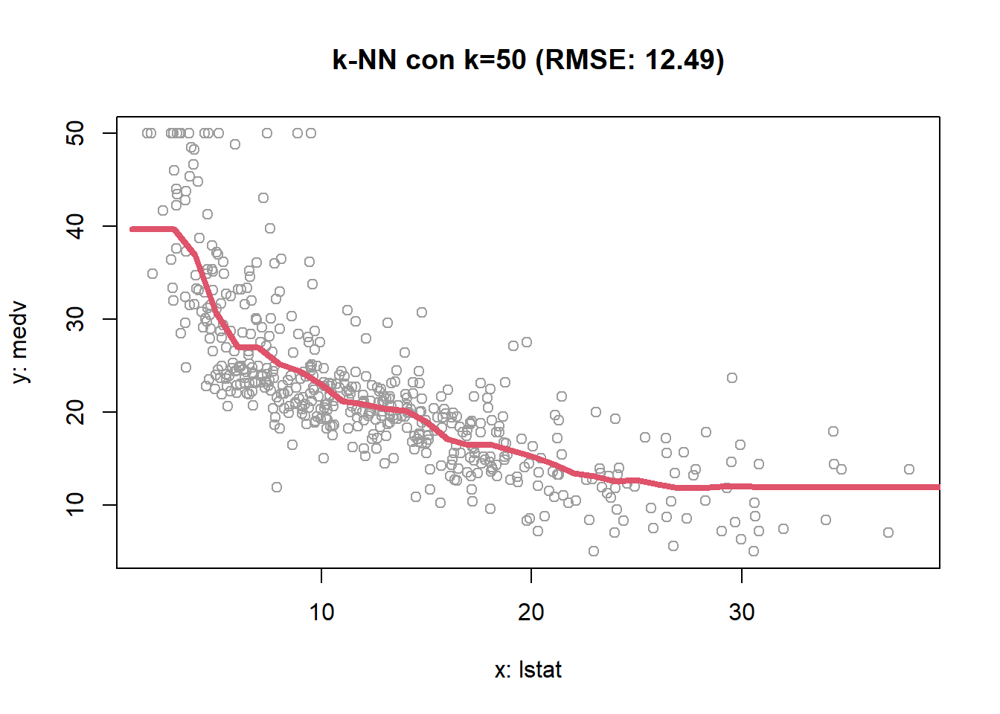
Warning in y - mt: longitud de objeto mayor no es múltiplo de la longitud de
uno menor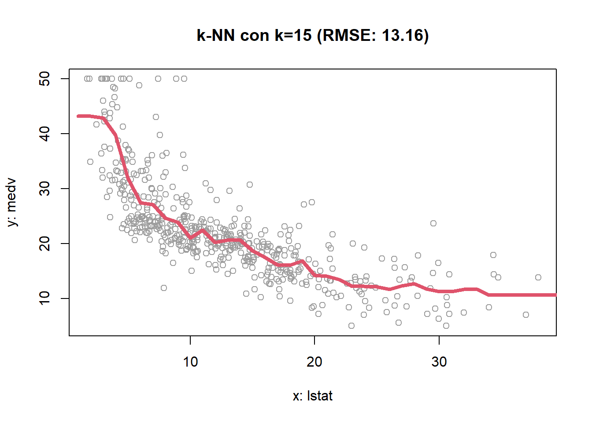
Warning in y - mt: longitud de objeto mayor no es múltiplo de la longitud de
uno menor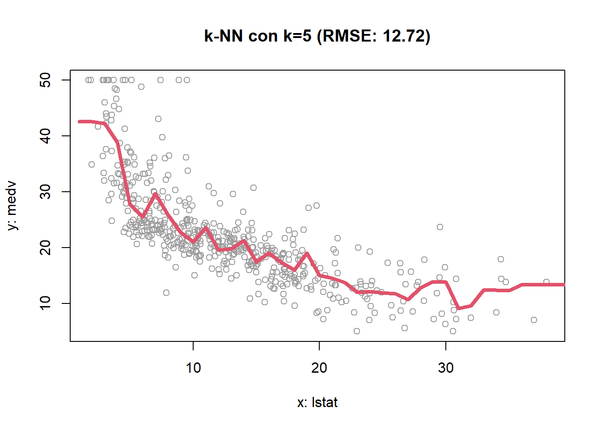
Warning in y - mt: longitud de objeto mayor no es múltiplo de la longitud de
uno menor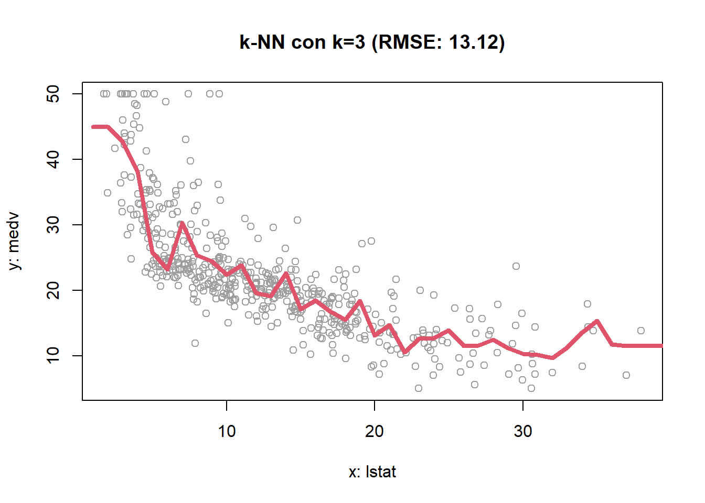
print(errors) k RMSE
1 200 10.57989
2 100 11.57428
3 50 12.49364
4 15 13.15771
5 5 12.71861
6 3 13.11624A Better Approach: Using Test Error
To properly evaluate model performance, we must estimate the test error, which is computed on a separate dataset that was not used for training. This can be done by: 1. Splitting the data into a training set and a test set. 2. Training the model on the training set. 3. Evaluating the model on the test set and computing the test error:
\[ \text{Test Error} = \frac{1}{m} \sum_{j=1}^{m} (y_j^{\text{test}} - \hat{m}(x_j^{\text{test}}))^2 \]
where: - ( y_j^{} ) are the actual test values, - ( (x_j^{}) ) are the model’s predictions on the test set, - ( m ) is the number of test observations.
Using training error alone can give a false sense of accuracy. Instead, we should always assess model performance on unseen data (test set) to ensure that our model generalizes well. In the next section, we will implement k-NN regression with a train-test split to correctly measure prediction error.
An (improved) example
k_values <- c(200, 100, 50, 15, 5, 3)
errors <- data.frame(k = integer(), Training_RMSE = numeric(), Test_RMSE = numeric())
set.seed(123)
n <- length(y)
train_index <- sample(1:n, size = floor(0.8 * n), replace = FALSE)
x_train <- x[train_index]
y_train <- y[train_index]
x_test <- x[-train_index]
y_test <- y[-train_index]
for (k in k_values) {
mt_train <- knn_regr(x_train, y_train, t=x_train, k=k, dist.method = "euclidean")
mt_test <- knn_regr(x_train, y_train, t=x_test, k=k, dist.method = "euclidean")
RMSE_train <- sqrt(mean((y_train - mt_train)^2))
RMSE_test <- sqrt(mean((y_test - mt_test)^2))
errors <- rbind(errors, data.frame(k = k, Training_RMSE = RMSE_train, Test_RMSE = RMSE_test))
plot(x_train, y_train, col=8, xlab="x: lstat", ylab="y: medv",
main=paste0("k-NN con k=", k, " (Train RMSE: ", round(RMSE_train, 2),
", Test RMSE: ", round(RMSE_test, 2), ")"))
t_seq <- seq(min(x), max(x), length.out=100)
mt_seq <- knn_regr(x_train, y_train, t=t_seq, k=k, dist.method = "euclidean")
lines(t_seq, mt_seq, col=2, lwd=4)
}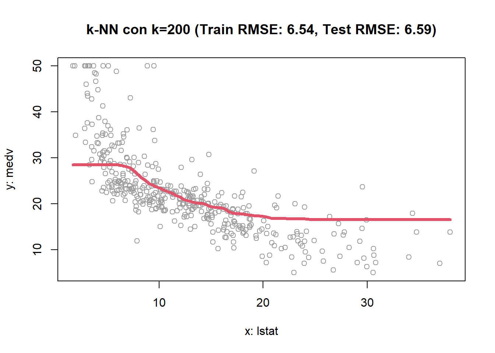
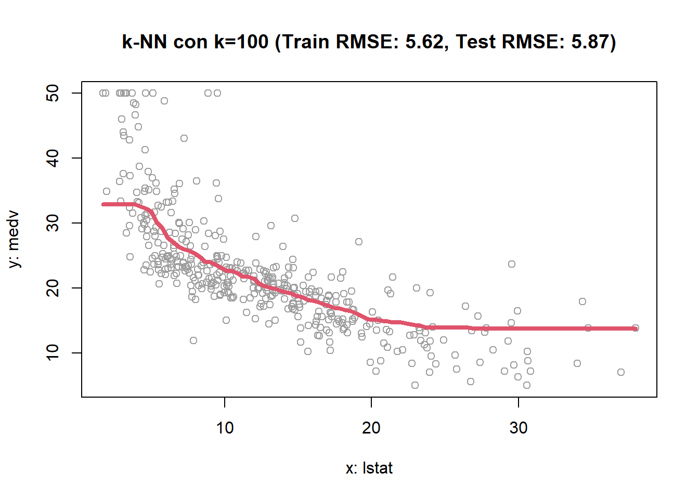
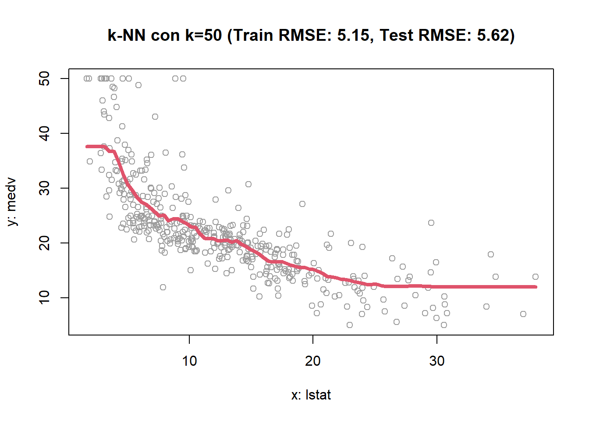
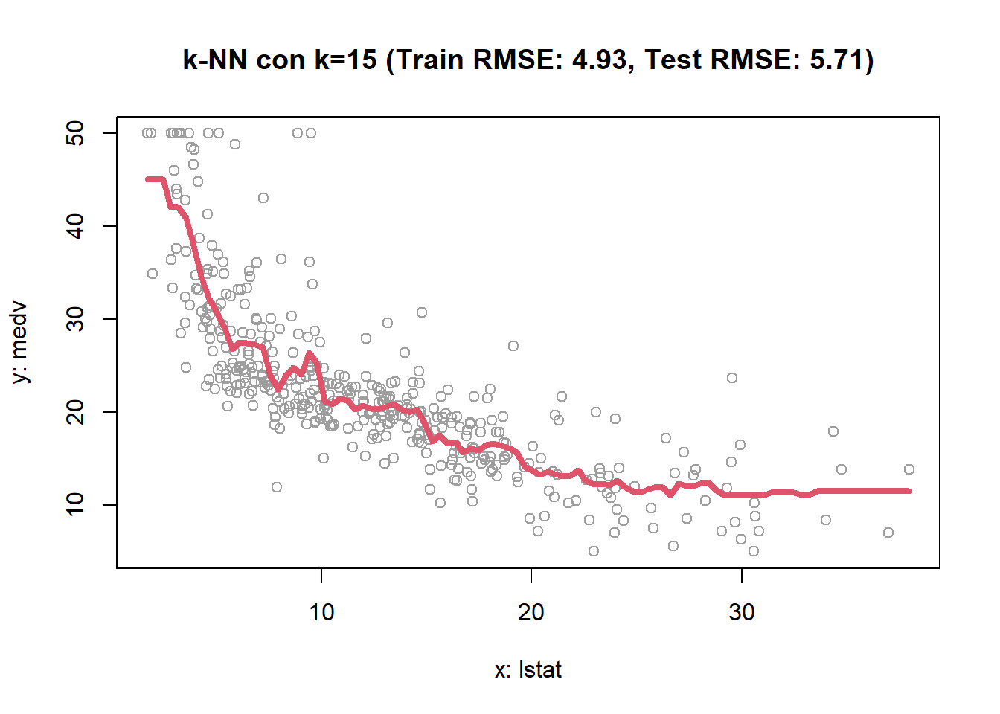
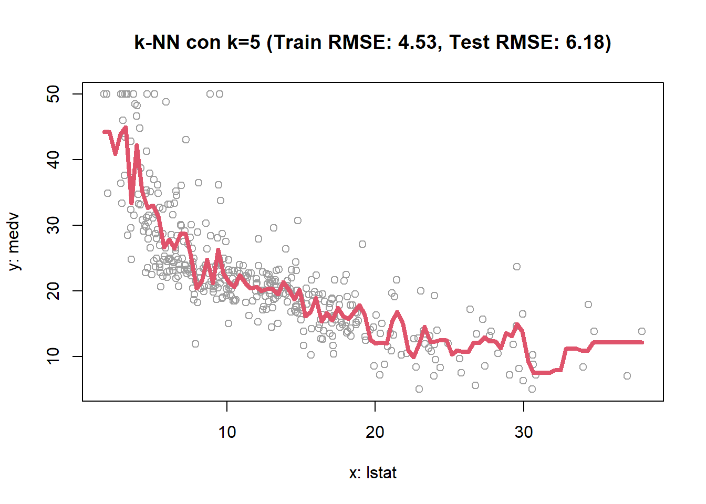
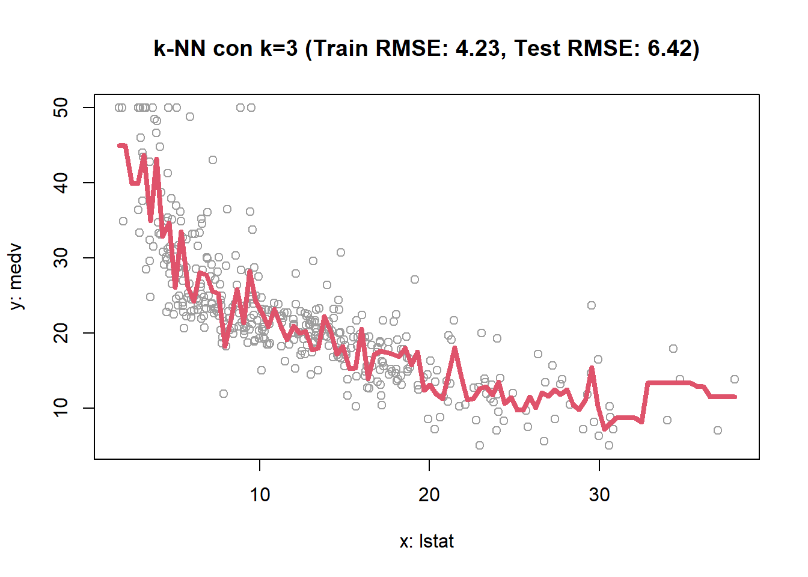
print(errors) k Training_RMSE Test_RMSE
1 200 6.540422 6.589752
2 100 5.624611 5.867107
3 50 5.146213 5.624467
4 15 4.929732 5.709414
5 5 4.530371 6.175764
6 3 4.229030 6.422137Step-by-step Explanation of the knn_regr Function
The function knn_regr implements k-nearest neighbors (k-NN) regression. This method estimates the conditional expectation ( E(Y | X = t) ) by averaging the values of the ( k ) closest neighbors of ( t ) in the training data. Below, we explain each step of the function in detail.
This function provides a simple implementation of k-NN regression by computing distances, identifying the nearest neighbors, and averaging their response values.
Function Code
knn_regr <- function(x, y, t=NULL, k=3, dist.method = "euclidean") {
nx <- length(y) # Number of observations in the training data
# If t is not provided, use x as the set of query points
if (is.null(t)) {
t <- as.matrix(x)
} else {
t <- as.matrix(t)
}
nt <- dim(t)[1] # Number of query points
# Compute the distance matrix between each t[j] and all x[i]
Dtx <- as.matrix(dist(rbind(t, as.matrix(x)), method = dist.method))
# Extract only the distances between test points and training points
Dtx <- Dtx[1:nt, nt+(1:nx)]
mt <- numeric(nt) # Initialize the vector of predictions
# Compute the k-NN estimate for each query point t[j]
for (j in 1:nt) {
d_t_x <- Dtx[j,] # Distances from t[j] to all training points
d_t_x_k <- sort(d_t_x, partial=k)[k] # Distance to the k-th nearest neighbor
N_t_k <- unname(which(d_t_x <= d_t_x_k)) # Indices of the k nearest neighbors
mt[j] <- mean(y[N_t_k]) # Compute the mean response of k nearest neighbors
}
return(mt) # Return the vector of estimated values
}Step-by-Step Explanation
1. Function Inputs
The function takes the following inputs: - x: The vector of predictor values (training data). - y: The corresponding response values. - t: A vector of test points where we want to estimate ( E(Y | X = t) ). If t is not provided, it defaults to x (in-sample estimation). - k: The number of nearest neighbors to consider. - dist.method: The method used to compute distances (default: Euclidean).
2. Checking the Input t
If t is NULL, the function assigns x to t, meaning that predictions will be computed for the training points.
if (is.null(t)){
t <- as.matrix(x)
} else {
t <- as.matrix(t)
}3. Compute the Distance Matrix
The function calculates pairwise distances between every point in t and every point in x using the dist function.
dist.method <- "euclidean"
Dtx <- as.matrix(dist(rbind(t, as.matrix(x)), method = dist.method))After computing the distance matrix, we extract only the distances between test points and training points:
Dtx <- Dtx[1:nt, nt+(1:nx)]4. Find the k Nearest Neighbors
For each test point ( t[j] ): - Extract the distances to all training points. - Identify the k-th smallest distance. - Select the indices of the k closest training points.
d_t_x <- Dtx[j,] # Distances from t[j] to all training points
d_t_x_k <- sort(d_t_x, partial=k)[k] # Distance to the k-th nearest neighbor
N_t_k <- unname(which(d_t_x <= d_t_x_k)) # Indices of the k nearest neighbors5. Compute the k-NN Estimate
Once the nearest neighbors are identified, their corresponding y values are averaged to compute the estimate:
mt[j] <- mean(y[N_t_k]) # Compute the mean response of k nearest neighbors6. Return the Estimated Values
Finally, the function returns the vector mt containing the estimated values for all test points.
return(mt)